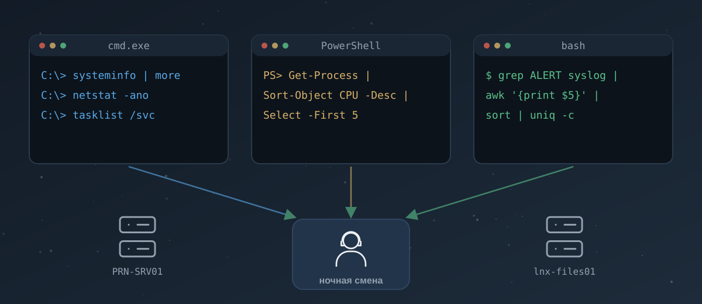

Учебник: Command Line
Путь: Cyber Security 101 · модуль Command Line
Комнаты: Windows Command Line (45 мин) · Windows PowerShell (60 мин) · Linux Shells (45 мин) [1, 2, 3]
Экзамен, под который калибровано: SEC1 (Cyber Security 101)

После учебника ты сможешь:
- за пять минут снять с Windows-хоста «паспорт»: версию, имя, сеть, процессы, соединения — и через cmd, и через PowerShell;
- объяснить, почему PowerShell передаёт по конвейеру объекты, а не текст, и чем это помогает фильтровать;
- связать открытое сетевое соединение с процессом и проверить файл процесса по хэшу;
- выбрать нужные строки из Linux-лога связкой
grep | awk | sort | uniq -cи написать маленький bash-скрипт для рутины; - отличить нормальный ночной ритм сервера от того, что стоит эскалировать;
- понимать, какие из твоих же команд в ATT&CK называются техниками Discovery и Execution — и почему один и тот же
systeminfoбывает и работой админа, и разведкой.
Как читать. Учебник идёт в паре с комнатами. Сначала глава, потом комната, потом возвращаешься к «Копнуть глубже» и практике. Флагов и ответов на вопросы комнат здесь нет — есть объяснение, где их искать.
О рамке. Здесь только нормальная работа систем и обычные логи. Реальных образцов атак нет, а алерты, где без них не обойтись, — короткие, учебные и подписаны «учебный». Это сознательно: аналитик, который хорошо знает норму, в разы быстрее замечает то, что из неё выпадает.
Вспомни прошлое
Пять вопросов по прошлым учебникам: про Windows, Linux и логи. Командная строка опирается ровно на это.
Глава 1. Windows Command Line — фонарик дежурного
Аналогия
Представь охранника на ночном обходе склада. У него нет камер в каждом углу и нет времени открывать каждую коробку. Зато есть фонарик и журнал обхода: посветил на дверь — заперта, посветил на окно — закрыто, записал. Командная строка Windows (cmd.exe) — такой фонарик: быстрые короткие вопросы к системе и короткие ответы. Графический интерфейс — это пройтись по складу при полном свете: нагляднее, но медленнее, и через удалённую консоль на чужом сервере его часто просто нет.
В комнате TryHackMe перечислены три причины любить CLI: он ест мало ресурсов, его легко автоматизировать и им удобно пользоваться удалённо [1]. Для SOC главная — третья: хосты, которые ты проверяешь, стоят в другом здании, а то и в другой стране.
Ты на смене
02:10, ночная смена, учебная фирма Pegnitz Druck GmbH (типография в Фюрте, выдуманная). В очереди тикет от мониторинга: «Учебный алерт: PRN-SRV01 — загрузка CPU выше 90 % дольше 20 минут». Это сервер печати. Ночью печатать некому, и коллега с прошлой смены оставил в Schichtübergabe строчку: «PRN-SRV01 шумел и вчера». Runbook разрешает тебе запустить на хосте команды только на чтение через консоль EDR. Ничего не останавливать, ничего не удалять.
Дальше вся глава — что ты набираешь в этой консоли и зачем.
Сначала понять, где ты
Первое правило удалённой проверки: убедись, что ты на том хосте и под той учёткой. Звучит глупо, пока однажды не проверишь не тот сервер.
hostname
whoami
ver
systeminfo | more
ver— версия Windows одной строкой.systeminfo— «паспорт» хоста: имя, версия и сборка ОС, время последней загрузки, установленные обновления, сетевые адаптеры. Вывод длинный, поэтому его передают вmore, чтобы листать экранами [1, 4].setбез аргументов печатает переменные окружения. Самая важная из них —Path: список папок, где Windows ищет программу, если ты набрал только её имя.
Зачем это аналитику: в systeminfo видно время последней загрузки (System Boot Time). Если сервер перезагружался за пять минут до алерта, «высокий CPU» может быть просто запуском служб. А список исправлений (Hotfix(s)) сразу показывает, давно ли хост обновлялся.
Ещё три команды из комнаты:
| Команда | Что делает | Где пригодится |
|---|---|---|
driverquery |
список установленных драйверов | инвентаризация; драйверы — частое место закрепления, но разбирать их — работа L2 |
help / команда /? |
справка | ключи всегда смотри здесь, а не вспоминай |
cls |
очистить экран | — |
Ctrl+C прерывает команду, которая выполняется слишком долго. На чужом сервере это важно: не жди пять минут, пока dir /s пройдёт по всему диску.
Сеть: с кем говорит хост
ipconfig
ping 10.20.0.1
tracert 10.20.0.1
nslookup print.pegnitz-druck.example
nslookup print.pegnitz-druck.example 10.20.0.53
netstat -ano
ipconfig— адреса, маска, шлюз. У него есть ключ для подробного вывода (DNS-серверы, DHCP, аппаратные данные адаптера). Какой именно и что ещё он показывает — посмотри вipconfig /?, это вопрос комнаты.pingиtracert— «отвечает ли» и «каким путём идём». Подробно мы разбирали их в учебнике по сетям.nslookup имяспрашивает DNS-сервер по умолчанию, аnslookup имя сервер— конкретный сервер [1]. Это приём для проверки: отвечает ли внутренний DNS так же, как публичный.netstat— сетевые соединения и порты. Главное в комнате — ключи-a(все, включая слушающие),-n(адреса цифрами, без разрешения имён — быстрее и честнее),-o(PID процесса) и-b(имя исполняемого файла; нужны права администратора) [5].
Одна строка netstat -ano — главный инструмент этой главы. Разберём её по полям.
Связка, которую надо запомнить: netstat даёт PID → tasklist по PID даёт имя процесса → дальше путь и хэш файла. Так от «хост куда-то ходит» доходишь до «вот какой exe и что это за файл».
Копнуть глубже: почему -n важнее, чем кажется
Без `-n` netstat пытается превратить каждый адрес в имя через обратный DNS. На хосте с сотней соединений это долго. Хуже другое: обратную запись (PTR) для своего адреса настраивает владелец адресного блока, то есть имя может врать. В тикет всегда пиши адрес цифрами, а имя — отдельно, с пометкой, откуда оно взято. Тот же принцип в Linux: `ss -tunap` (замена старого netstat из пакета iproute2) с ключом `-n` [6].Файлы: посмотреть, ничего не сломав
| Команда | Что делает |
|---|---|
cd |
показать или сменить текущую папку |
dir |
содержимое папки; /a — включая скрытые и системные, /s — рекурсивно |
tree |
дерево папок |
type файл |
вывести текстовый файл |
more файл |
вывести постранично |
mkdir / rmdir |
создать / удалить папку |
copy, move, del (erase) |
копировать, переместить, удалить; работают маски * и ? |
Из таблицы аналитику на чужом хосте нужна только верхняя половина. copy, move, del ты знаешь для комнаты и для своей машины. На проверяемом сервере они меняют улики: даже простой copy обновит время доступа у файлов.
dir /a C:\ProgramData
dir /s /b C:\Users\*.log
type C:\Windows\System32\drivers\etc\hosts
Последняя строка — классика первичной проверки. Файл hosts подменяет DNS для этого компьютера. В норме там только комментарии, а лишняя строка с адресом — повод записать её в тикет.
Процессы: кто ест CPU
tasklist
tasklist /fi "imagename eq spoolsv.exe"
tasklist /fi "pid eq 4120"
tasklist /svc
tasklist /v /fi "memusage gt 200000"
tasklist — список процессов с PID, сессией и памятью. Ключ /fi фильтрует. Фильтры: IMAGENAME, PID, USERNAME, SERVICES, MEMUSAGE (в килобайтах) и другие; операторы eq, ne, а для чисел ещё gt, lt, ge, le [7]. /svc показывает, какие службы живут внутри каждого процесса. Это ответ на вечный вопрос «что за svchost номер семь».
taskkill завершает процесс по PID или по имени. В комнате ты им пользуешься на своей учебной машине. На смене запомни: убить процесс на чужом хосте — не решение L1. Это действие по runbook после согласования, и чаще его делает L2 или владелец системы. Процесс, убитый до снятия данных, уносит с собой всё, что было у него в памяти.
Что ты нашёл на PRN-SRV01 (сюжет).
systeminfo: последняя загрузка в 01:58.tasklist /v: больше всего CPU и памяти у процесса обслуживания обновлений Windows, плюс у службы печати.netstat -ano: у PID этого процесса — соединения на 443 к адресу 198.51.100.24 (учебный, RFC 5737). Ставить вердикт рано: что за файл стоит за процессом и куда на самом деле идут соединения, удобнее проверить в PowerShell. Об этом глава 2.
Обслуживание: shutdown, chkdsk, sfc
В финале комнаты три команды обслуживания [1]:
chkdsk— проверка файловой системы диска;sfc /scannow— проверка целостности защищённых системных файлов с восстановлением;sfc /verifyonly— только проверка, без исправлений; требует прав администратора [8];shutdown— выключение и перезагрузка. Ключи для перезагрузки и для отмены запланированного выключения есть вshutdown /?, это вопрос комнаты.
Для SOC эти команды важны в обратную сторону: ты их не запускаешь, а видишь в логах. shutdown от неожиданной учётки ночью, sfc на сервере без заявки на обслуживание — строки, которые стоит связать с тикетом изменений (Change). Нашёл тикет — норма. Не нашёл — вопрос админу.
Что из этого видно в логах
Каждая команда выше — это процесс cmd.exe или отдельный .exe (например, systeminfo.exe, tasklist.exe). Если включён аудит создания процессов с командной строкой, они появятся в событии 4688. Если стоит Sysmon — в Sysmon Event ID 1, с родительским процессом [9, 10]. Твоя собственная проверка тоже оставляет следы. Поэтому хороший аналитик пишет в тикет: «в 02:14–02:21 запускал на хосте systeminfo, tasklist, netstat через EDR, сессия такая-то». Тогда утренняя смена не примет тебя за постороннего.
Где ошибаются новички
- Пишут
netstatбез-nна хосте с сотней соединений и ждут минуту. - Путают PID и имя:
tasklist /fi "pid eq spoolsv.exe"ничего не найдёт, для имени нужен фильтрimagename. - Видят
svchost.exeв десяти экземплярах и пугаются. Это норма: внутри разные службы, проверяй черезtasklist /svc. - Запускают изменяющие команды (
del,taskkill,shutdown) «для проверки» на чужом хосте. - Не записывают в тикет свои действия на хосте.
Термины
| EN | RU | DE |
|---|---|---|
| command prompt / command line | командная строка | Eingabeaufforderung / Kommandozeile |
| command-line interface (CLI) | интерфейс командной строки | Befehlszeilenschnittstelle |
| process ID (PID) | идентификатор процесса | Prozess-ID |
| listening port | слушающий порт | lauschender Port |
| environment variable | переменная окружения | Umgebungsvariable |
| read-only check | проверка только на чтение | rein lesende Prüfung |
Связи
- Назад: Windows Fundamentals 1 — где что лежит в Windows; Pre Security → Windows CLI Basics.
- Вперёд: Windows Logging for SOC из SOC Level 1 — откуда в SIEM берутся следы этих команд; Living Off the Land Attacks — когда встроенные команды используют не админы.
Глава 2. Windows PowerShell — конвейер объектов
Аналогия
В cmd ответ системы — это распечатка: лист бумаги с текстом. Хочешь выбрать из неё строки — бери ножницы и режь по колонкам, надеясь, что колонки не съедут. В PowerShell ответ — стопка карточек из картотеки. У каждой карточки есть поля (имя, PID, память, путь к файлу), и ты сортируешь стопку по нужному полю, не думая о том, как она напечатана.
В комнате похожая аналогия про машину: у объекта есть свойства (цвет, модель) и методы — то, что объект умеет делать (ехать, тормозить) [2]. Процесс в PowerShell — объект: у него есть свойства Name, Id, CPU, Path и методы, например Kill(). Этот метод на смене мы трогать не будем.
Ты на смене
02:25, продолжение. На PRN-SRV01 есть подозрительно занятый процесс и его соединения на 443. Теперь надо ответить на три вопроса: что это за файл, куда именно он ходит и не появилось ли на хосте чего-то нового (служб, учёток). В PowerShell каждый вопрос — одна строка.
Как читать любую команду: Verb-Noun
Команды PowerShell называются cmdlet (командлет) и строятся по схеме Глагол-Существительное: Get-Process, Get-Service, Set-Location, New-Item, Remove-Item [2]. Глаголы стандартные, их немного: Get читает, Set меняет, New создаёт, Remove удаляет, Start/Stop запускают и останавливают.
Отсюда простое правило для смены: команды на Get- безопасны (читают), всё остальное меняет систему и запускается только по runbook. Это не гарантия на 100 %, но как первый фильтр работает отлично.
Четыре командлета, которые находят все остальные:
Get-Command -Verb Get -Noun *Net* # какие Get-команды есть про сеть
Get-Help Get-Process -Examples # примеры использования
Get-Alias dir # во что превращается привычная команда
Get-Process | Get-Member # какие свойства и методы у объекта
Get-Commandищет командлеты по глаголу и существительному.Get-Help ... -Examples— самый быстрый способ понять незнакомый командлет: сразу готовые примеры.Get-Aliasпоказывает алиасы — короткие имена. Многие привычные команды cmd и Linux в PowerShell работают именно как алиасы:dir,ls,cd,cat… Что стоит за каждым, проверь сам черезGet-Alias— часть вопросов комнаты именно об этом.Get-Member— главный инструмент этой главы, хоть в комнате он и не выделен. Он показывает, какие поля есть у объекта. Если не знаешь, как называется свойство, не угадывай: спросиGet-Member.
Find-Module и Install-Module ищут и ставят модули из PowerShell Gallery [2]. На своей машине — пожалуйста. На чужом сервере установка модуля — изменение системы.
Файлы
| Командлет | Что делает |
|---|---|
Get-ChildItem |
содержимое папки (-Recurse — вглубь, -Force — со скрытыми, -Filter *.log — по маске) |
Set-Location |
перейти в папку |
New-Item |
создать файл или папку (-ItemType Directory) |
Copy-Item, Move-Item, Remove-Item |
копировать, переместить, удалить |
Get-Content |
прочитать файл (-Tail 20 — последние строки, -Wait — следить, как tail -f) |
Главная разница с cmd: Get-ChildItem возвращает объекты файлов, а не строки. Поэтому вопрос «файлы, изменённые за последние сутки» решается фильтром по свойству:
Get-ChildItem C:\ProgramData -Recurse -File -ErrorAction SilentlyContinue |
Where-Object LastWriteTime -gt (Get-Date).AddDays(-1) |
Select-Object FullName, Length, LastWriteTime
-ErrorAction SilentlyContinue глушит ошибки «доступ запрещён» для папок, куда у тебя нет прав. Без него вывод тонет в красном.
Конвейер: сердце PowerShell
Символ | передаёт результат одной команды на вход следующей. В cmd и bash по трубе течёт текст, в PowerShell — объекты. По документации Microsoft они идут по одному, и следующая команда работает с каждым по очереди [11]. Четыре командлета, которые ты будешь писать постоянно:
| Командлет | Что делает | Пример |
|---|---|---|
Where-Object |
оставить объекты по условию | Where-Object CPU -gt 100 |
Sort-Object |
отсортировать | Sort-Object CPU -Descending |
Select-Object |
взять нужные поля или первые N | Select-Object -First 5 Name, Id, CPU |
Select-String |
искать текст (аналог grep) | Select-String -Path *.log -Pattern 'error' |
Операторы сравнения в Where-Object: -eq (равно), -ne (не равно), -gt / -ge (больше / больше или равно), -lt / -le (меньше / меньше или равно) [2]. Для текста есть ещё -like (маска *) и -match (регулярное выражение).
Вот как стопка процессов превращается в ответ на вопрос «кто ест CPU». Нажимай на шаги:
Целиком эта цепочка выглядит так:
Get-Process | Where-Object CPU -gt 60 | Sort-Object CPU -Descending |
Select-Object -First 5 Name, Id, CPU, Path
Копнуть глубже: фильтруй у источника, а не трубой
`Where-Object` получает **все** объекты и только потом выбрасывает лишние. На списке процессов это неважно. На журнале Security с миллионом событий — критично. Поэтому у многих командлетов есть свой фильтр, который работает ещё при чтении данных. Для журналов это `Get-WinEvent -FilterHashtable`, и Microsoft прямо пишет, что такой фильтр эффективнее `Where-Object` [12]:Get-WinEvent -FilterHashtable @{LogName='System'; StartTime=(Get-Date).AddHours(-6)} -MaxEvents 50
Информация о системе и учётках
Get-ComputerInfo | Select-Object CsName, OsName, OsVersion, OsLastBootUpTime
Get-LocalUser
Get-NetIPConfiguration
Get-NetIPAddress -AddressFamily IPv4
Get-ComputerInfo — объектный родственник systeminfo: тот же паспорт, но из него можно выбрать нужные поля. Get-LocalUser перечисляет локальные учётные записи с признаком Enabled и описанием (Description) [2].
Почему Get-LocalUser полезен на смене: на сервере локальных учёток мало, и их список почти не меняется. Новая включённая учётка, о которой никто не знает, — то, что стоит записать и показать админу. Чтобы увидеть все поля учётки (а не только три в таблице по умолчанию), передай её в Select-Object * или Format-List *. В комнате есть задание именно на это. Как найти нужную учётку, догадаешься сам.
Процессы, службы, соединения, хэши
Четыре командлета реального времени из комнаты [2]:
Get-Process -Id 4120 | Select-Object Name, Id, Path, StartTime
Get-Service | Where-Object Status -eq 'Running' | Sort-Object DisplayName
Get-NetTCPConnection -State Established
Get-FileHash 'C:\путь\к\файлу.exe'
Get-Process — процессы как объекты. В отличие от tasklist, здесь сразу есть Path и время старта.
Get-Service — службы: имя, отображаемое имя, состояние. Список служб на сервере стабилен. Новая служба со странным именем — повод для вопроса.
Get-NetTCPConnection — объектный netstat, работает только в Windows (модуль NetTCPIP). Фильтры прямо в параметрах: -State, -LocalPort, -RemoteAddress [13]. У каждого объекта соединения есть свойство с PID процесса-владельца. Как оно называется, найди через Get-NetTCPConnection | Get-Member: это вопрос комнаты, и заодно хорошая привычка.
Связка «соединение → процесс» выглядит так (подставь имя свойства, которое найдёшь сам):
$c = Get-NetTCPConnection -State Established -RemotePort 443
$c | ForEach-Object { Get-Process -Id $_.<свойство_с_PID> } | Select-Object -Unique Name, Id, Path
Get-FileHash — хэш файла. По умолчанию SHA256. Допустимые алгоритмы: SHA1, SHA256, SHA384, SHA512, MD5. Microsoft отдельно предупреждает: MD5 и SHA1 годятся только для простой проверки изменений, а не для защиты от подделки [14]. Хэш — отпечаток файла: его ищут в репутационных базах и сверяют с эталоном от вендора или админа.
Что ты нашёл на PRN-SRV01 (сюжет).
Get-Processпоказал путь занятого процесса — вC:\Windows\WinSxS\…. Это штатное место компонента обслуживания Windows, а неC:\Users\…\AppDataи неC:\ProgramData.Get-FileHashдал SHA256. В репутационной базе он отмечен как файл Microsoft с действительной подписью (сюжет учебный).Get-NetTCPConnectionпоказал два соединения на 443 к 198.51.100.24. В CMDB компании (учебной) это адрес внутреннего прокси обновлений.Get-LocalUser— те же три учётки, что в эталонном списке.Get-Service— новых служб нет. Остался один вопрос: почему это происходит ночью. Ответ нашёлся в календаре изменений: на эту ночь стоит окно установки обновлений, перезагрузка в 01:58 — его часть. Вердикт — benign, ожидаемая активность. Как это оформить, разберём в главе 4.
Скрипты и удалённое выполнение
PowerShell-скрипт — файл .ps1 с теми же командами. Запускать скрипты не даёт execution policy (политика выполнения). Про неё важно знать одну фразу из документации: она не является границей безопасности, это эшелонированная защита от случайного запуска [15]. То есть «политика стоит Restricted, значит злой скрипт не запустится» — неправильный вывод: обойти её штатно может любой пользователь. Ещё деталь: на macOS и Linux политика всегда Unrestricted и не меняется [15].
Invoke-Command выполняет блок команд на удалённом компьютере. Транспорт — служба WinRM, порты 5985 (HTTP) и 5986 (HTTPS) [16]. Удалённое управление PowerShell включено по умолчанию на Windows Server 2012 и новее; на клиентских Windows его надо включать (Enable-PSRemoting) [17]. Синтаксис — два параметра: один принимает имя компьютера, второй — блок кода в фигурных скобках. Как именно они называются, найди в Get-Help Invoke-Command -Examples. Это последний вопрос комнаты.
Аналитику L1 сам Invoke-Command нужен редко: удалённо по хостам ходят админы и L2. Но видеть его в логах надо уметь. Удалённая сессия PowerShell на целевом хосте живёт в процессе wsmprovhost.exe, и команды, которые в ней запускают, становятся его дочерними процессами [18, 19]. Когда в SIEM мелькает wsmprovhost.exe, первый вопрос: а кто из админов сейчас работает, и есть ли у этого тикет?
Что PowerShell пишет о себе
PowerShell умеет записывать в журнал текст выполненных скриптовых блоков — событие 4104 (Script Block Logging). В Windows PowerShell 5.1 оно лежит в канале Microsoft-Windows-PowerShell/Operational, в PowerShell 7 — в PowerShellCore/Operational. Полная запись включается политикой (GPO, реестр или powershell.config.json) [20]. Для SOC это одно из самых ценных событий Windows: видно не только «запустился powershell.exe», но и что именно он выполнял.
Get-WinEvent -FilterHashtable @{LogName='Microsoft-Windows-PowerShell/Operational'; Id=4104} -MaxEvents 20
Копнуть глубже: Windows PowerShell 5.1 и PowerShell 7 — два разных продукта
На любой Windows 10/11 и Server уже стоит **Windows PowerShell 5.1** (`powershell.exe`). **PowerShell 7** (`pwsh.exe`) ставится отдельно, кроссплатформенный, работает и на macOS и Linux [21]. Командлеты в основном одни и те же, но есть отличия: `Get-EventLog` в 7 нет [22], `Get-NetTCPConnection` нет вне Windows, журналы 4104 пишутся в разные каналы. Для тебя это хорошая новость: PowerShell 7 ставится на Mac с M1 (пакеты Arm64 есть), так что конвейер, `Where-Object`, `Sort-Object`, `Get-FileHash`, `Select-String` можно тренировать без виртуалки. Официальный способ — пакет `.pkg` со страницы релизов. Установку через Homebrew Microsoft официально не поддерживает, хотя она работает [21]. Запуск — `pwsh`.Где ошибаются новички
- Угадывают имена свойств вместо
Get-Memberи получают пустой результат без ошибки. - Пишут
Where-Object CPU > 60. В PowerShell>— это перенаправление в файл: ты только что создал файл с именем60. Сравнение пишется-gt. - Читают
CPUуGet-Processкак проценты. Это секунды процессорного времени. - Считают, что execution policy защищает от вредоносных скриптов.
- Фильтруют огромные журналы через
Where-Objectвместо-FilterHashtable.
Термины
| EN | RU | DE |
|---|---|---|
| cmdlet | командлет | Cmdlet |
| object / property / method | объект / свойство / метод | Objekt / Eigenschaft / Methode |
| pipeline | конвейер | Pipeline |
| alias | алиас, псевдоним | Alias |
| execution policy | политика выполнения | Ausführungsrichtlinie |
| script block logging | журналирование скриптовых блоков | Skriptblockprotokollierung |
| file hash | хэш файла | Dateihash, Prüfsumme |
Связи
- Назад: глава 1 этого учебника — те же вопросы, но в cmd.
- Вперёд: Windows Logging for SOC и Windows Threat Detection 1 — как события PowerShell выглядят в SIEM; File and Hash Threat Intel — что делать с хэшем дальше.
Глава 3. Linux Shells — переводчик между тобой и ядром
Аналогия
Шелл — это переводчик на переговорах. Ты говоришь на человеческом («покажи файлы в этой папке»), ядро Linux понимает только системные вызовы. Шелл стоит между вами, переводит туда и обратно и заодно ведёт стенограмму: историю команд. Переводчики бывают разные (bash, zsh, fish). Один строже, другой подсказывает слова и исправляет опечатки, но переводят они одно и то же. Комната начинается ровно с этой мысли: шелл — посредник между пользователем и ОС [3].
Ты на смене
03:40. Тикет по PRN-SRV01 ушёл в ожидание подтверждения от админа. Прилетает второй: «Учебный алерт: правило "слово ALERT в syslog" — lnx-files01, 04:06». Правило в SIEM ловит любую строку журнала со словом ALERT. Коллега пометил в Schichtübergabe: «срабатывает почти каждую ночь, никто не смотрел». Сегодня посмотришь ты.
Для этой главы мы взяли настоящий журнал:
Linux_2k.logиз открытого датасета loghub — 2000 строк syslog с сервераcombo, лето 2005 года [23]. В сюжете этот сервер играет роль lnx-files01. Все числа ниже посчитаны по этому файлу, и ты можешь пересчитать их у себя.
curl -sSLO https://raw.githubusercontent.com/logpai/loghub/master/Linux/Linux_2k.log
Базовые команды и где ты
Комната начинает с пяти команд [3]: pwd (где я), cd (перейти), ls (что тут), cat (вывести файл), grep (найти строки). Их ты знаешь по Linux Fundamentals. Добавим к ним то, что нужно аналитику с первой минуты на чужом хосте — та же логика, что в главе 1:
hostname; whoami; id
uname -a
echo $SHELL
cat /etc/shells
echo $SHELL— твой шелл по умолчанию, точнее значение переменной окружения. Шелл, в котором ты сидишь прямо сейчас, может быть другим: проверь черезps -p $$./etc/shells— список «разрешённых» шеллов полными путями. Его читаетchsh, когда ты меняешь шелл по умолчанию [24]. Как именно меняют шелл, показано в комнате.
Какие бывают шеллы
| Шелл | Где встречается | Что важно аналитику |
|---|---|---|
| bash | почти любой Linux-сервер | скрипты и примеры в интернете — в основном под bash; история в ~/.bash_history |
| zsh | рабочие станции разработчиков, в том числе Mac | своя история в ~/.zsh_history, плагины и темы |
| fish | любители удобства | синтаксис не совместим с bash: скрипт под bash в fish не пойдёт |
| sh (dash и др.) | системные скрипты, минимальные контейнеры | самый простой: многих bash-удобств нет |
Чем шеллы отличаются по удобству (подсветка, автодополнение, исправление опечаток), разобрано в комнате, — эту табличку оттуда не дублирую. Для смены главное другое: сервер почти всегда говорит на bash, и логи, которые ты читаешь, пишутся без оглядки на твой любимый шелл.
История команд: стенограмма, которой нельзя слепо верить
Bash по умолчанию хранит историю в ~/.bash_history (переменная HISTFILE). В памяти держится 500 команд (HISTSIZE), а записывается история в файл при выходе из шелла [25]. На своей машине посмотри её, а заодно эти переменные:
echo $HISTFILE $HISTSIZE $HISTCONTROL
Почему это важно на смене:
- История не журнал аудита. При
HISTCONTROL=ignorespace(илиignoreboth) команда, набранная с пробелом в начале, в историю не попадает [25]. БезHISTTIMEFORMATу записей нет времени. А пока шелл не закрыт, команды текущей сессии в файле ещё нет. - В истории оседают секреты. Пароль, набранный прямо в командной строке (
mysql -p'…'), остаётся в файле открытым текстом. В ATT&CK чтение таких файлов — отдельная техника, T1552.003 Shell History, а чистка истории — T1070.003 [26, 27]. Вывод для тебя как для пользователя: пароли не пишут аргументом в командной строке. - Надёжный источник — системные журналы (auth.log/secure, journald, auditd), а не файл в домашней папке, который пользователь правит как хочет.
Скрипты: рутина, которую делает машина
Скрипт — текстовый файл с командами, которые шелл выполняет по порядку. В комнате ты собираешь его по кирпичикам [3]: расширение .sh, редактор nano, первая строка-shebang #!/bin/bash (каким интерпретатором запускать), переменные, echo и read, право на запуск chmod +x, запуск через ./, цикл for, условие if/elif/else и комментарии через #.
Покажу те же кирпичики в скрипте, который реально пригодится на смене. Он даёт сводку по syslog-файлу для передачи смены:
#!/bin/bash
# nightcheck.sh — короткая сводка по syslog-файлу для передачи смены
# Использование: ./nightcheck.sh <файл_лога> [слово]
log="$1"
word="${2:-ALERT}"
if [ -z "$log" ]; then
echo "Использование: $0 <файл_лога> [слово]"
exit 1
elif [ ! -r "$log" ]; then
echo "Не могу прочитать файл: $log"
exit 2
fi
total=$(grep -c '' "$log")
echo "Файл: $log, строк: $total"
echo "--- Топ-5 программ ---"
awk '{print $5}' "$log" | sed -E 's/\[[0-9]+\]:?$//; s/:$//' | sort | uniq -c | sort -rn | head -5
echo "--- Строки со словом «$word» по часам ---"
grep -- "$word" "$log" | awk '{split($3,t,":"); print t[1]":00"}' | sort | uniq -c
Разбор по строкам:
log="$1"— переменная из первого аргумента. Пробелов вокруг=нет:log = "$1"bash поймёт как запуск командыlog."${2:-ALERT}"— второй аргумент, а если его нет, то слово ALERT по умолчанию.if [ -z "$log" ]— условие «строка пустая».elif [ ! -r "$log" ]— «файл не читается». Квадратные скобки — это командаtest, поэтому пробелы внутри обязательны.exit 1,exit 2— код возврата. Ноль значит «всё хорошо», остальное — ошибка. По коду возврата другие скрипты и cron понимают, что что-то пошло не так.$(...)— подставить вывод команды в переменную.grep -c ''считает строки, включая последнюю без перевода строки. Почему неwc -l, увидишь ниже.grep -- "$word"— двойной дефис говорит grep, что дальше уже не ключи. Тогда слово, начинающееся с-, не сломает команду.- Переменные всегда в кавычках (
"$log"): без них имя файла с пробелом развалится на два аргумента.
Скрипт проверен на bash 5 на этом самом файле. В нём нет ничего, чего не было бы в старом bash 3.2, который стоит в macOS, а sed -E работает и в GNU, и в BSD [28]. Но запусти у себя на Mac: это первое задание практики.
Цикл for нужен, когда файлов много. Например, посчитать слово error во всех .log в папке:
for f in /var/log/*.log; do
n=$(grep -c "error" "$f")
echo "$f: $n"
done
Ровно такую задачу (найти ключевое слово по всем логам папки) ты решаешь в последнем задании комнаты, только там скрипт уже написан, а тебе надо понять, что вписать в пустые кавычки. Ответы комнаты здесь не даю, но после этого разбора задание займёт пару минут.
Копнуть глубже: read и почему пароль в скрипте — плохая идея
`read` читает ввод пользователя в переменную: `read -p "Имя: " name`. Для секретов есть `read -s` — ввод не отображается на экране. В задании комнаты с «локером» скрипт сравнивает введённый PIN со значением, записанным прямо в тексте скрипта. Это учебная игрушка, и она хорошо показывает, почему в реальности так не делают: любой, кто может прочитать файл (`cat locker.sh`), видит секрет. Правильное место для секретов — менеджер секретов или хотя бы файл с правами `600`, а лучше проверка по хэшу.Поиск по логам: конвейер bash
Вернёмся к тикету. Сначала смотрим, как вообще выглядит строка syslog. Наведи на поля той самой строки со словом ALERT:
Теперь картина целиком. Сколько строк и за какой период:
grep -c '' Linux_2k.log # 2000
wc -l Linux_2k.log # 1999 — wc считает переводы строк, а у последней строки его нет
head -1 Linux_2k.log | cut -c1-15 # Jun 14 15:16:01
tail -1 Linux_2k.log | cut -c1-15 # Jul 27 14:42:00
Кто пишет в журнал больше всех — пятое поле, программа, без PID в квадратных скобках:
awk '{print $5}' Linux_2k.log | sed -E 's/\[[0-9]+\]:?$//; s/:$//' | sort | uniq -c | sort -rn | head
Связка sort | uniq -c | sort -rn — самая частая фраза в работе аналитика на Linux. uniq схлопывает только соседние одинаковые строки, поэтому перед ним всегда стоит sort. -c добавляет счётчик, второй sort -rn сортирует по числу по убыванию.
Теперь главный вопрос тикета: когда срабатывает слово ALERT и что пишется рядом?
grep -c "ALERT" Linux_2k.log # 43
grep "ALERT" Linux_2k.log | awk '{split($3,t,":"); print t[1]}' | sort | uniq -c # все 43 — в 04 часа
grep "ALERT" Linux_2k.log | awk '{print $5}' | sort | uniq -c # все 43 — от logrotate
Активность по часам за весь журнал:
Ночной столбец в 04:00 — самый высокий: 296 строк. Подсветка ночи красным — это только напоминание «люди в это время спят», а не вердикт. Разберём, кто пишет в 04 часа:
awk '$3 ~ /^04:/ {print $5}' Linux_2k.log | sed -E 's/\[[0-9]+\]:?$//; s/:$//' | sort | uniq -c | sort -rn
Результат: su(pam_unix) — 172, sshd(pam_unix) — 60, logrotate — 43, cups — 12, syslogd — 6, ftpd — 2, snmpd — 1. И вот как выглядит типичная ночь, 19 июня (все 8 строк за сутки):
Jun 19 04:08:55 combo su(pam_unix)[2192]: session opened for user cyrus by (uid=0)
Jun 19 04:08:55 combo su(pam_unix)[2192]: session closed for user cyrus
Jun 19 04:08:57 combo cups: cupsd shutdown succeeded
Jun 19 04:09:02 combo cups: cupsd startup succeeded
Jun 19 04:09:11 combo syslogd 1.4.1: restart.
Jun 19 04:09:11 combo logrotate: ALERT exited abnormally with [1]
Jun 19 04:15:18 combo su(pam_unix)[3676]: session opened for user news by (uid=0)
Jun 19 04:15:18 combo su(pam_unix)[3676]: session closed for user news
Читаем как аналитик:
- Каждую ночь около 04:0x root (
uid=0) на секунду переключается на служебные учёткиcyrusиnews— по 43 раза каждая за 44 дня журнала. Секундные сессии в одно и то же время суток от root — почерк планировщика, а не человека. - logrotate — программа ротации логов, и по документации её «обычно запускают ежедневным заданием cron» [29]. Её запуск ровно в этом окне — ожидаемый.
- По воскресеньям (19.06, 26.06, 3.07, 10.07, 17.07, 24.07 — все шесть дат воскресенья 2005 года) в том же окне перезапускаются
cupsdиsyslogd. Это похоже на еженедельную ротацию: у директивыweeklyв logrotate день по умолчанию — воскресенье, а перезапуск служб после ротации обычно прописан в её конфиге [29]. Самого конфига у нас нет, так что это обоснованная версия, а не факт. - «ALERT exited abnormally with [1]» — это не сигнал системы безопасности. Так скрипт ежедневного запуска logrotate сообщает, что сама ротация завершилась с ненулевым кодом. Строку с этим текстом Red Hat разбирает в отдельной статье базы знаний как известную проблему; текст статьи доступен только с подпиской, открыт лишь заголовок [30]. Ошибка ротации — тема для админа (логи могут перестать ротироваться и забить диск), но не инцидент.
Вердикт по тикету: false positive для правила безопасности. Слово ALERT в тексте сообщения не означает алерт. Рекомендации: исключить из правила program=logrotate (или искать не слово, а конкретные события) и отдельно, тикетом в эксплуатацию, сообщить админу, что ротация на сервере падает каждую ночь.
Сам формат расписания cron — пять полей «минута, час, день месяца, месяц, день недели», где 0 и 7 — воскресенье [31]:
# мин час день мес день_нед команда
2 4 * * * /usr/local/bin/nightly.sh # каждый день в 04:02
22 4 * * 0 /usr/local/bin/weekly.sh # по воскресеньям в 04:22
Где смотреть задания на живом сервере: crontab -l (свои), /etc/crontab, папки /etc/cron.d/, /etc/cron.daily/, /etc/cron.weekly/, а на системах с systemd ещё systemctl list-timers. Новое задание cron, которого нет в эталоне, — классическое место закрепления, в ATT&CK это T1053.003 [32]. Поэтому знать, какие задания на сервере нормальные, полезно ещё до того, как что-то случилось.
Мини-SIEM: потренируйся руками
Ниже неделя того же журнала (26.06–02.07.2005, 340 строк) в виде таблицы с поиском. Это не замена grep, а способ быстро почувствовать данные.
Где ошибаются новички
- Ставят
uniq -cбезsortперед ним и получают неверные счётчики. - Верят
wc -lдо последней строки: в файле без финального перевода строки он покажет на одну меньше. - Считают слово ALERT, ERROR или FAILED в тексте лога вердиктом. Это текст, который написал программист; смысл даёт программа, контекст и регулярность.
- Берут
$11для адреса в syslog: номер поля плавает. Надёжнее искать по якорю или поNF. - Пишут
a = 5в bash, забывают кавычки вокруг переменных и пробелы внутри[ ]. - Доверяют
~/.bash_historyкак журналу аудита. - Копируют GNU-команды на Mac:
sed -iбез суффикса,grep -Pиdate -dв macOS не работают [28].
Термины
| EN | RU | DE |
|---|---|---|
| shell | командная оболочка, шелл | Shell, Kommandozeileninterpreter |
| shebang | шебанг (первая строка #!) |
Shebang |
| exit code | код возврата | Rückgabewert, Exit-Code |
| log rotation | ротация журналов | Logrotation |
| scheduled job (cron) | задание по расписанию | geplanter Auftrag, Cronjob |
| command history | история команд | Befehlsverlauf |
| false positive | ложное срабатывание | Fehlalarm, False Positive |
Связи
- Назад: Linux Fundamentals Part 1, Part 2, Part 3 — права, процессы, cron; на полке — учебник «Linux Fundamentals».
- Вперёд: Linux Logging for SOC и Linux Threat Detection 1 из SOC Level 1; Logs Fundamentals из этого же пути.
Глава 4. За рамками THM: знать норму
Комнаты учат команды. На смене от тебя ждут другого: глянув на вывод, за секунды сказать, нормально это или нет. Для этого надо знать, как выглядит здоровая система. Эта глава — про норму в Windows и Linux, а ещё про то, как те же самые команды выглядят в ATT&CK и как закрыть смену.
Норма Windows: дерево системных процессов
У Windows есть небольшой набор системных процессов, которые всегда запускаются одинаково: тот же путь, тот же родитель, то же число экземпляров, та же учётка. Эту норму SANS свёл в постер «Hunt Evil» [33]. Ниже — его основа в виде дерева. Нажимай на узлы.
Как этим пользоваться на смене, на примере вопросов к выводу Get-Process или к дереву в EDR:
| Признак | Норма | Если не так — что записать в тикет |
|---|---|---|
| Число экземпляров | lsass.exe, services.exe, wininit.exe — ровно по одному |
«два процесса lsass.exe, PID …» |
| Путь | всё из C:\Windows\System32\, кроме explorer.exe (C:\Windows\) |
путь целиком, хэш |
| Родитель | svchost.exe ← services.exe; lsass.exe ← wininit.exe |
имя и PID родителя |
| Учётка | системные процессы — от SYSTEM или служебных учёток | имя учётки |
| Имя | ровно svchost.exe |
похожие имена (scvhost.exe, svch0st.exe) — опечатки не бывают случайными |
Ещё одна норма, которая пригодится вместе с главами 1 и 2: на сервере не бывает «просто так» cmd.exe или powershell.exe с родителем w3wp.exe (веб-сервер IIS) или с родителем-программой Office. Сам по себе запуск командной строки не преступление: её запускают админы, установщики и задания планировщика. Значение имеет кто родитель.
Норма Linux: ритм сервера
На Linux «норма» — это прежде всего ритм: что происходит каждую ночь, каждую неделю, при каждой загрузке. Глава 3 показала его на реальном журнале:
- ежедневно около 04:00 — короткие сессии
suот root к служебным учёткам, запуск logrotate; - по воскресеньям в том же окне — перезапуск
cupsdиsyslogd; - при загрузке — десятки строк
kernelподряд (в нашем журнале — утро 27.07, 76 строк ядра).
Вывод для смены: сначала построй ритм, потом ищи выбросы. Тот же вопрос можно задать к любому событию: «а вчера в это время было то же?» Если было и вчера, и неделю назад, это почти наверняка расписание. Дальше ищи его в /etc/cron* или systemctl list-timers и записывай в тикет, где нашёл. Выброс — то, чего в ритме нет: сессия root в 15:42 в среду, новое задание cron, процесс из /tmp или /dev/shm, вход по SSH с адреса, которого не было за месяц.
| Норма | Выпадает из нормы — проверить |
|---|---|
задания в /etc/cron.daily/ от пакетов, которые знает админ |
новое задание в /etc/cron.d/ или у пользователя, без тикета |
| вход по SSH админа из VPN-диапазона в рабочее время | вход по SSH с нового внешнего адреса ночью |
su/sudo от root к служебным учёткам по расписанию |
sudo от учётки, которая раньше им не пользовалась |
демоны из /usr/sbin, /usr/bin |
исполняемый файл в /tmp, /dev/shm, скрытой папке в $HOME |
Твои команды глазами ATT&CK
Почти каждая команда из этого учебника есть в матрице MITRE ATT&CK как техника. Чаще всего — в тактике Discovery (разведка изнутри): атакующий, попавший на хост, задаёт системе те же вопросы, что и ты. Поэтому детектирование здесь строится не на самой команде, а на контексте: кто, откуда, сколько команд подряд, кто родитель. ID сверены с ATT&CK Enterprise v20.0 [34, 35, 36, 37, 38, 39, 40, 41, 42, 43]. Нажимай на этапы ленты:
Пример учебного алерта, который ты встретишь в SOC Level 1 в разных вариантах:
Сравнение трёх оболочек: где что видно
Пояснения к «частично»: в cmd путь к файлу процесса штатно не виден в tasklist, хэш считает certutil -hashfile, журналы читает wevtutil, текст ищет findstr. Всё это есть, но неудобно. В bash фильтр по полю — это awk: мощно, но ты сам отвечаешь за то, что номер колонки не уехал.
Как закрыть смену: тикет и Schichtübergabe
Ты разобрал два тикета. Оба — не инциденты. Именно такие тикеты и составляют большую часть смены, и закрыть их надо так, чтобы утром никто не переделывал твою работу.
Тикет PRN-SRV01 (закрываешь как benign / ожидаемая активность):
- что сработало: правило нагрузки CPU, 02:10 (время сервера, CET/CEST — укажи явно);
- что проверено:
systeminfo(загрузка в 01:58), процессы и пути, SHA256 файла (подписан Microsoft), соединения (адрес из CMDB — прокси обновлений), локальные учётки и службы (без изменений); - чем подтверждено: окно обслуживания в календаре изменений, номер Change;
- твои действия на хосте: какие команды, с какого по какое время, через что запускал;
- рекомендация: подавлять это правило на время согласованных окон обслуживания.
Тикет lnx-files01 (закрываешь как false positive + задача в эксплуатацию):
- правило срабатывает на слово ALERT в тексте logrotate, 43 раза за 44 дня, всегда около 04:00;
- предложение по тюнингу правила — исключить
program=logrotate; - отдельная задача админу: ротация логов падает каждую ночь, риск переполнения диска.
Schichtübergabe (передача смены) — коротко, по-немецки, потому что утренняя смена может быть немецкоязычной:
PRN-SRV01: CPU-Alarm 02:10 – erwartete Aktivität (Wartungsfenster, Change liegt vor), geschlossen. lnx-files01: Regel „ALERT im Syslog" ist ein Fehlalarm (logrotate, jede Nacht ca. 04:00), Tuning-Vorschlag im Ticket, Betrieb informiert. Keine offenen Eskalationen.
Две немецкие рамки, которые касаются именно командной строки:
- Betriebsrat. Логирование PowerShell (4104) и командных строк (4688) записывает, что делал конкретный сотрудник. Технические средства, пригодные для контроля поведения или работы сотрудников, по § 87 Abs. 1 Nr. 6 BetrVG требуют согласия производственного совета [44]. Поэтому в немецкой фирме «просто включить полное логирование» часто означает сначала договориться с Betriebsrat. Аналитику это знать полезно: иногда данных нет не по ошибке, а по соглашению.
- Сроки. Если бы проверка показала настоящий инцидент на объекте под NIS-2, у компании были бы сроки уведомления BSI: первое сообщение за 24 часа, уведомление за 72 часа, итоговый отчёт через месяц [45]. При утечке персональных данных по DSGVO — 72 часа надзорному органу [46]. L1 сам никого не уведомляет, но аккуратный таймлайн с часовым поясом в твоём тикете — то, из чего потом пишут эти уведомления.
Копнуть глубже: почему норма — самый недооценённый навык L1
Детектирующие правила в SIEM пишут под атаки, а срабатывают они в основном на норму: обновления, бэкапы, админов, скрипты мониторинга. Аналитик, который знает, что `su` к `news` каждую ночь в 04:0x — это расписание, закрывает такой тикет за пять минут и с обоснованием. Аналитик, который не знает, либо эскалирует шум (и L2 перестаёт ему доверять), либо закрывает «на глаз» (и однажды закроет настоящее). Поэтому на собеседовании на вопрос «как ты отличишь ложное срабатывание» лучший ответ начинается со слов «сравню с нормой для этого хоста».Вопросы с собеседований
Отвечай вслух, по-английски или по-немецки: в Германии первое интервью на SOC L1 часто идёт на немецком, техническое — на английском. Под каждым вопросом — разбор и добивающий вопрос, которым интервьюер проверяет, что ответ не заучен.
1. EN: «How would you find out which process is behind a suspicious outbound connection on a Windows host?»
**Хороший ответ:** «`netstat -ano` gives me the PID for the connection, then `tasklist /fi "pid eq …"` gives the process name. In PowerShell I'd use `Get-NetTCPConnection` and pass the PID to `Get-Process` to get the full path. Then I hash the file with `Get-FileHash` and check it against reputation sources. I wouldn't kill the process myself — I'd document and escalate according to the runbook.» **Добивающий:** «Why `-n`?» — без разрешения имён быстрее, и PTR-запись может врать.2. EN: «What is the main difference between cmd and PowerShell for an analyst?»
**Ответ:** cmd возвращает текст, PowerShell — объекты со свойствами. Значит, фильтровать и сортировать можно по полям (`Where-Object`, `Sort-Object`), а не резать текст. Плюс PowerShell умеет читать журналы событий (`Get-WinEvent`) и сам пишет полезные логи (4104). **Добивающий:** «Is the execution policy a security control?» — нет, по документации Microsoft это не граница безопасности, а защита от случайного запуска.3. DE: «Was machen Sie, wenn ein Alarm nachts jede Nacht zur gleichen Uhrzeit auslöst?»
**Ответ:** «Ich prüfe zuerst, ob es ein wiederkehrendes Muster ist – gleiche Uhrzeit, gleiches Programm, gleicher Benutzer. Dann suche ich die Ursache, zum Beispiel einen Cronjob oder ein Wartungsfenster. Wenn es erwartete Aktivität ist, dokumentiere ich das im Ticket und schlage ein Tuning der Regel vor.» **Добивающий:** «Und wenn Sie den Cronjob nicht finden?» — тогда это уже не «известный шум», а вопрос к админу, и закрывать нельзя.4. DE: «Können Sie im Schichtdienst arbeiten, auch nachts und am Wochenende?» (Schichtdienst)
**Ответ — честно и конкретно:** «Ja, ich bin bereit, im Schichtdienst zu arbeiten, auch nachts und am Wochenende. Mir ist bewusst, dass das Planung braucht – Schlaf, feste Routinen. Wichtig ist mir eine saubere Schichtübergabe, damit nichts verloren geht.» Если к собеседованию уже будет опыт сменной работы (охрана, поздние смены), назови его: это сильный аргумент. Не обещай «всегда и сколько угодно» — спрашивают, понимаешь ли ты, что это такое. **Добивающий:** «Wie sieht für Sie eine gute Schichtübergabe aus?» — открытые тикеты, что эскалировано и кому, что ждёт ответа, кратко и письменно.5. DE: «Sie sind Quereinsteiger. Warum sollten wir Sie nehmen?» (Quereinsteiger)
**Ответ:** «Ich bringe Erfahrung aus der Webentwicklung mit – ich verstehe, wie Webanwendungen und HTTP funktionieren, und kann Skripte lesen und schreiben. Seit Monaten lerne ich systematisch mit TryHackMe, zuletzt Kommandozeile unter Windows und Linux, und kann zeigen, wie ich Logs auswerte.» Покажи конкретику: скрипт `nightcheck.sh`, разбор журнала. **Добивающий:** «Was war das Schwierigste beim Lernen?» — назови реальную вещь и как её преодолел.6. EN: «What do you do if you're stuck on an alert and don't know what it means?» («если застрял»)
**Ответ:** «I timebox it — say 15–20 minutes. I check the runbook and internal knowledge base, look at the raw event and the documentation for the event ID or tool. If I still can't decide, I escalate with what I've already checked, so the next person doesn't start from zero. Not knowing is fine; sitting on an alert silently is not.» **Добивающий:** «What exactly would you write in the escalation?» — что сработало, что проверил, что нашёл, почему не смог решить, какой следующий шаг предлагаешь.7. EN: «A user forwards a suspicious email with an attachment. What are your first steps?» (подозрительное письмо)
**Ответ:** «I don't open the attachment on my workstation. I check the headers — sender, return path, SPF/DKIM/DMARC results — and the links and attachment hash against reputation sources. Then I search whether other users got the same email and whether anyone clicked or opened it. Depending on the result I close it as benign or escalate and request removal from all mailboxes.» **Добивающий:** «How would you see on the endpoint that someone opened the attachment?» — по дочерним процессам почтового или офисного клиента: Office, запускающий `cmd.exe` или `powershell.exe`, — сразу эскалация (глава 4, дерево процессов).8. EN: «Give me an example of a false positive you'd expect.» (false positive)
**Ответ — из этого учебника:** «A rule matching the word "ALERT" in syslog fired every night on a Linux server. The lines came from logrotate at around 4 AM — the daily rotation job reporting its own error. Security-wise it's a false positive; I'd suggest excluding logrotate from the rule and open a separate ticket for the admins, because a failing log rotation can fill the disk.» **Добивающий:** «How did you prove it's a schedule?» — одно и то же время 43 ночи из 44, одна программа, root, плюс logrotate по документации запускается ежедневным cron.9. DE: «Was ist der Unterschied zwischen `Get-EventLog` und `Get-WinEvent`?»
**Ответ:** «`Get-EventLog` nutzt eine veraltete API, sieht nur klassische Protokolle und fehlt in PowerShell 7. `Get-WinEvent` liest alle Kanäle, auch Sysmon und PowerShell Operational, und kann mit `-FilterHashtable` schon an der Quelle filtern.»Самопроверка
Практика
Всё делается на Mac с M1, без виртуалок. Данные настоящие, числа можно проверить.
Задание 1. Пересчитай журнал сам (20 мин)
Скачай Linux_2k.log (команда в главе 3) и без подсказок получи:
- число строк двумя способами и объясни разницу;
- топ-5 программ;
- сколько раз за журнал запускался
cupsd; - в какой час чаще всего пишет
ftpd; - сколько раз открывалась сессия
suдля каждой учётки.
Ответы для самопроверки
1. `grep -c ''` → 2000, `wc -l` → 1999 (нет финального перевода строки). 2. ftpd 916, sshd(pam_unix) 677, su(pam_unix) 172, kernel 76, klogind 46. 3. 6 раз (`grep -c "cupsd startup"`), все по воскресеньям около 04:0x–04:20. 4. В 23 часа — 110 строк (`grep ftpd … | awk '{split($3,t,":"); print t[1]}' | sort | uniq -c | sort -rn`). 5. cyrus — 43, news — 43 (`grep "su(pam_unix)" | grep "session opened" | grep -o "for user [a-z]*" | sort | uniq -c`). Без `session opened` получится по 86: каждая сессия даёт строку открытия и строку закрытия.Задание 2. Свой скрипт для рутины (30 мин)
- Сохрани
nightcheck.shиз главы 3, сделай исполняемым, запусти наLinux_2k.log. На Mac должно получиться то же, что в учебнике. - Добавь четвёртый блок: «сессии su по учёткам» (ожидаемо cyrus 43, news 43).
- Добавь третий необязательный аргумент — час (например,
04). Тогда скрипт показывает строки только за этот час. Подсказка:awk -v h="$3" '...'. - Запусти скрипт без аргументов и с несуществующим файлом. Проверь коды возврата через
echo $?.
Задание 3. PowerShell на Mac: объекты вместо текста (40 мин)
Поставь PowerShell 7 (пакет .pkg со страницы релизов, раздел «Копнуть глубже» в главе 2) и запусти pwsh.
Get-Process | Sort-Object CPU -Descending | Select-Object -First 5 Name, Id, CPU
Get-Process | Get-Member -MemberType Property | Select-Object -First 15 Name
Get-ChildItem ~/Downloads -File | Where-Object Length -gt 10MB | Sort-Object Length -Descending
Потом то же, что в задании 1, но объектами. Рядом с журналом в loghub лежит его разбор на поля — Linux_2k.log_structured.csv:
Invoke-WebRequest https://raw.githubusercontent.com/logpai/loghub/master/Linux/Linux_2k.log_structured.csv -OutFile linux.csv
Import-Csv linux.csv | Group-Object Component | Sort-Object Count -Descending | Select-Object -First 5 Count, Name
Ожидаемо — те же 916 / 677 / 172 / 76 / 46, что дал awk. Сравни, насколько проще, когда поля уже названы. И последнее: посчитай хэш любого файла двумя способами — Get-FileHash файл в pwsh и shasum -a 256 файл в обычном терминале. Хэш совпадёт, разница только в регистре букв.
Задание 4. Очередь триажа (20 мин)
Четыре учебных алерта. Поставь вердикт и только потом открывай разбор.
Задание 5. Отчёт по-немецки (20 мин)
Напиши короткий отчёт по тикету lnx-files01 по схеме Was → Wann (с часовым поясом) → Woher → Auswirkung → Empfehlung. Пять–семь предложений.
Образец
**Was:** Die SIEM-Regel „ALERT im Syslog" hat auf lnx-files01 ausgelöst. Die Meldung stammt von logrotate: „ALERT exited abnormally with [1]". **Wann:** Täglich zwischen 04:04 und 04:20 Uhr Serverzeit (Zeitzone im Log nicht angegeben, laut CMDB MEZ/MESZ), 43-mal in 44 Tagen. **Woher:** Lokaler Prozess logrotate, gestartet durch den täglichen Cronjob unter root. Keine externe Quelle. **Auswirkung:** Kein Sicherheitsvorfall (False Positive). Betrieblich: Die Logrotation schlägt jede Nacht fehl – Risiko, dass sich das Dateisystem füllt. **Empfehlung:** Regel-Tuning (logrotate ausschließen bzw. nach konkreten Ereignissen suchen); Ticket an den Betrieb zur Prüfung der Logrotation.Шпаргалка
| Задача | cmd | PowerShell | bash |
|---|---|---|---|
| Где я, кто я | hostname, whoami |
$env:COMPUTERNAME, whoami |
hostname, whoami, id |
| Паспорт системы | systeminfo \| more |
Get-ComputerInfo |
uname -a, cat /etc/os-release |
| Сеть и адреса | ipconfig |
Get-NetIPConfiguration |
ip a |
| Соединения + PID | netstat -ano |
Get-NetTCPConnection + Get-Member |
ss -tunap |
| Процессы | tasklist /v, /fi |
Get-Process |
ps aux |
| Службы | tasklist /svc |
Get-Service |
systemctl list-units --type=service |
| Файлы в папке | dir /a |
Get-ChildItem -Force |
ls -la |
| Показать файл | type |
найди через Get-Alias type |
cat, less |
| Найти текст | findstr |
Select-String |
grep |
| Хэш файла | certutil -hashfile f SHA256 |
Get-FileHash |
sha256sum / на Mac shasum -a 256 |
| Журналы | wevtutil qe |
Get-WinEvent -FilterHashtable |
journalctl, /var/log/* |
| Справка | команда /?, help |
Get-Help … -Examples |
man, --help |
| Посчитать по полю | — | Group-Object |
sort \| uniq -c \| sort -rn |
Правила смены: только чтение · -n у netstat · фильтруй у источника · свойство не угадывай, а спрашивай Get-Member · переменные bash в кавычках · sort перед uniq · слово в логе не вердикт · сначала ритм, потом выбросы · свои команды на хосте записывай в тикет · убить, удалить, изолировать — не L1.
Норма Windows: lsass, services, wininit — по одному; всё в System32, explorer — в C:\Windows; svchost ← services, lsass ← wininit.
Источники
Все ссылки проверены при сборке учебника. Где факт не удалось подтвердить первоисточником, это отмечено прямо в тексте.
- TryHackMe, Windows Command Line (windowscommandline), 45 мин — https://tryhackme.com/room/windowscommandline (проверено 28.10.2026)
- TryHackMe, Windows PowerShell (windowspowershell), 60 мин — https://tryhackme.com/room/windowspowershell (проверено 28.10.2026)
- TryHackMe, Linux Shells (linuxshells), 45 мин — https://tryhackme.com/room/linuxshells (проверено 28.10.2026)
- Microsoft Learn, справочник команд Windows — https://learn.microsoft.com/en-us/windows-server/administration/windows-commands/windows-commands (проверено 17.09.2026)
- Microsoft Learn, команда netstat (параметр -b показывает исполняемый файл соединения) — https://learn.microsoft.com/en-us/windows-server/administration/windows-commands/netstat (проверено 17.09.2026)
- man 8 ss — утилита из пакета iproute2 («investigate sockets») — https://man7.org/linux/man-pages/man8/ss.8.html (проверено 17.09.2026)
- Microsoft Learn, команда tasklist (фильтры /fi и операторы eq, ne, gt, lt, ge, le) — https://learn.microsoft.com/en-us/windows-server/administration/windows-commands/tasklist (проверено 28.10.2026)
- Microsoft Learn, команда sfc (/scannow, /verifyonly; нужны права администратора) — https://learn.microsoft.com/en-us/windows-server/administration/windows-commands/sfc (проверено 28.10.2026)
- Microsoft Learn, Event 4688 и Audit Process Creation — https://learn.microsoft.com/en-us/windows/security/threat-protection/auditing/event-4688 (проверено 16.09.2026)
- Microsoft Sysinternals, Sysmon — https://learn.microsoft.com/en-us/sysinternals/downloads/sysmon (проверено 16.09.2026)
- Microsoft Learn, about_Pipelines («objects sent down the pipeline are delivered one at a time») — https://learn.microsoft.com/en-us/powershell/module/microsoft.powershell.core/about/about_pipelines (проверено 28.10.2026)
- Microsoft Learn, Get-WinEvent (и предупреждение о Get-EventLog) — https://learn.microsoft.com/en-us/powershell/module/microsoft.powershell.diagnostics/get-winevent (проверено 16.09.2026)
- Microsoft Learn, Get-NetTCPConnection (модуль NetTCPIP) — https://learn.microsoft.com/en-us/powershell/module/nettcpip/get-nettcpconnection (проверено 28.10.2026)
- Microsoft Learn, Get-FileHash (по умолчанию SHA256) — https://learn.microsoft.com/en-us/powershell/module/microsoft.powershell.utility/get-filehash (проверено 28.10.2026)
- Microsoft Learn, about_Execution_Policies («isn't a security boundary, it's defense in depth») — https://learn.microsoft.com/en-us/powershell/module/microsoft.powershell.core/about/about_execution_policies (проверено 28.10.2026)
- Microsoft Learn, Installation and configuration for Windows Remote Management — порты 5985 (HTTP) и 5986 (HTTPS) — https://learn.microsoft.com/en-us/windows/win32/winrm/installation-and-configuration-for-windows-remote-management (проверено 28.10.2026)
- Microsoft Learn, about_Remote_Requirements — удалённое управление PowerShell включено по умолчанию на Windows Server 2012+ — https://learn.microsoft.com/en-us/powershell/module/microsoft.powershell.core/about/about_remote_requirements (проверено 28.10.2026)
- MITRE CAR-2014-11-004, Remote PowerShell Sessions (процесс wsmprovhost.exe на целевом хосте) — https://car.mitre.org/analytics/CAR-2014-11-004/ (проверено 28.10.2026)
- MITRE ATT&CK T1021.006, Remote Services: Windows Remote Management — https://attack.mitre.org/techniques/T1021/006/ (проверено 28.10.2026)
- Microsoft Learn, about_Logging_Windows — Script Block Logging, событие 4104 — https://learn.microsoft.com/en-us/powershell/module/microsoft.powershell.core/about/about_logging_windows (проверено 28.10.2026)
- Microsoft Learn, Installing PowerShell on macOS (пакеты Arm64; Homebrew официально не поддерживается) — https://learn.microsoft.com/en-us/powershell/scripting/install/installing-powershell-on-macos (проверено 28.10.2026)
- Microsoft Learn, Get-EventLog — предупреждение об устаревшем Win32 API и рекомендация Get-WinEvent — https://learn.microsoft.com/en-us/powershell/module/microsoft.powershell.management/get-eventlog (проверено 27.09.2026)
- loghub (logpai), публичные логи реальных систем — https://github.com/logpai/loghub (проверено 16.09.2026)
- man 5 shells — /etc/shells (man7.org) — https://man7.org/linux/man-pages/man5/shells.5.html (проверено 28.10.2026)
- GNU Bash Reference Manual, Bash Variables (HISTFILE, HISTSIZE, HISTCONTROL, HISTTIMEFORMAT) — https://www.gnu.org/software/bash/manual/html_node/Bash-Variables.html (проверено 28.10.2026)
- MITRE ATT&CK T1552.003, Unsecured Credentials: Shell History — https://attack.mitre.org/techniques/T1552/003/ (проверено 28.10.2026)
- MITRE ATT&CK T1070.003, Indicator Removal: Clear Command History (тактика Stealth) — https://attack.mitre.org/techniques/T1070/003/ (проверено 28.10.2026)
- Apple Open Source, man-страницы text_cmds (sed, grep, cut) и shell_cmds (date) — https://raw.githubusercontent.com/apple-oss-distributions/text_cmds/main/sed/sed.1 (проверено 16.09.2026)
- man 8 logrotate — «Normally, logrotate is run as a daily cron job» (man7.org) — https://man7.org/linux/man-pages/man8/logrotate.8.html (проверено 28.10.2026)
- Red Hat Customer Portal, статья 39006 «I am getting 'logrotate: ALERT exited abnormally with [1]' messages in logs…» (виден только заголовок, текст за логином) — https://access.redhat.com/solutions/39006 (проверено 28.10.2026)
- man 5 crontab — формат расписания cron (man7.org) — https://man7.org/linux/man-pages/man5/crontab.5.html (проверено 28.10.2026)
- MITRE ATT&CK T1053.003, Scheduled Task/Job: Cron — https://attack.mitre.org/techniques/T1053/003/ (проверено 28.10.2026)
- SANS DFIR, постер «Hunt Evil» (PDF 2018; страница постера обновлена 10.06.2024) — https://www.sans.org/posters/hunt-evil (проверено 28.10.2026)
- MITRE ATT&CK Enterprise v20.0 (13.10.2026) — сверка ID по выжимке STIX в репозитории thm-polka — https://github.com/mitre-attack/attack-stix-data (проверено 28.10.2026)
- MITRE ATT&CK T1082, System Information Discovery — https://attack.mitre.org/techniques/T1082/ (проверено 28.10.2026)
- MITRE ATT&CK T1057, Process Discovery — https://attack.mitre.org/techniques/T1057/ (проверено 28.10.2026)
- MITRE ATT&CK T1016, System Network Configuration Discovery — https://attack.mitre.org/techniques/T1016/ (проверено 28.09.2026)
- MITRE ATT&CK T1049, System Network Connections Discovery — https://attack.mitre.org/techniques/T1049/ (проверено 28.09.2026)
- MITRE ATT&CK T1007, System Service Discovery — https://attack.mitre.org/techniques/T1007/ (проверено 28.10.2026)
- MITRE ATT&CK T1033, System Owner/User Discovery — https://attack.mitre.org/techniques/T1033/ (проверено 28.10.2026)
- MITRE ATT&CK T1059.003, Windows Command Shell — https://attack.mitre.org/techniques/T1059/003/ (проверено 28.10.2026)
- MITRE ATT&CK T1059.001, PowerShell — https://attack.mitre.org/techniques/T1059/001/ (проверено 28.10.2026)
- MITRE ATT&CK T1059.004, Unix Shell — https://attack.mitre.org/techniques/T1059/004/ (проверено 28.10.2026)
- BetrVG § 87 — права Betriebsrat на соучастие, в т.ч. Abs. 1 Nr. 6 (технические средства контроля) — https://www.gesetze-im-internet.de/betrvg/__87.html (проверено 17.09.2026)
- BSI, пресс-релиз «Cybersicherheitsrecht: NIS-2-Umsetzungsgesetz ab morgen in Kraft», 05.12.2025 — https://www.bsi.bund.de/DE/Service-Navi/Presse/Pressemitteilungen/Presse2025/251205_NIS-2-Umsetzungsgesetz_in_Kraft.html (проверено 16.09.2026)
- DSGVO, ст. 33 — уведомление надзорного органа о нарушении защиты данных (72 часа) — https://dsgvo-gesetz.de/art-33-dsgvo/ (проверено 17.09.2026)
Отзыв
Три вопроса, ответь в чате одной-двумя строками на каждый:
- Что зашло больше всего и что хочется видеть чаще?
- Что было лишним, скучным или слишком очевидным?
- Где пришлось перечитывать по два раза — сложная тема или неудачное объяснение?
И четвёртый, про этот учебник: хватило ли «нормы» вместо разборов атак, или для SOC L1 хочется хотя бы учебных примеров того, как выглядит отклонение?